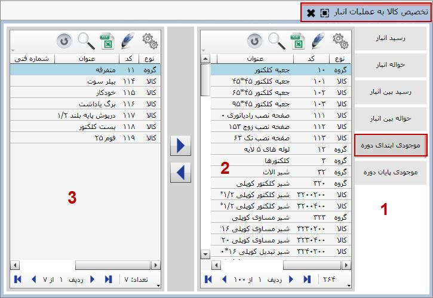
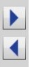

در این قسمت شما می توانید کالاها را به عملیات انبار تخصیص دهید، با هر عملیات فقط در مورد کالاهایی می توانید سند صادر کنید که به آن عملیات تخصیص یافته باشد. توجه داشته باشید که شما هر تعداد کالا مایل بودید می توانید به یک عملیات اختصاص دهید و هر کالا می تواند به چندین عملیات تخصیص یابد.
در فرم صدور سند انبار با انتخاب یک عملیات فقط برای کالاهایی می توانید سند صادر کنید که به عملیات انتخابی شما تخصیص داده شده باشد.
برای ورود به این قسمت کافی است روی منوی «تخصیص کالا به عملیات انبار» کلیک کنید:
در شکل قبل صفحه «تخصیص کالا به عملیات انبار» را مشاهده می کنید، این صفحه نیز مانند سایر صفحات تخصیص، شامل سه قسمت می باشد. قسمت 1 شامل عملیات هایی است که در سیستم انبار تعریف شده است. کالا هایی که به عملیات انتخابی اختصاص داده شده اند در قسمت 2 و کالاهایی که به عملیات انتخابی اختصاص داده نشده اند در قسمت 3 قرار می گیرند، در واقع مجموع کالاهایی که در قسمت 2 و قسمت 3 قرار دارد برابر است با کل کالاهایی که در سیستم تعریف کرده اید. بنابراین توسط دو کلید  می توانید کالاها را بین دو قسمت 2 و 3 جابه جا کرده و فرآیند اختصاص کالا به عملیات را انجام دهید.